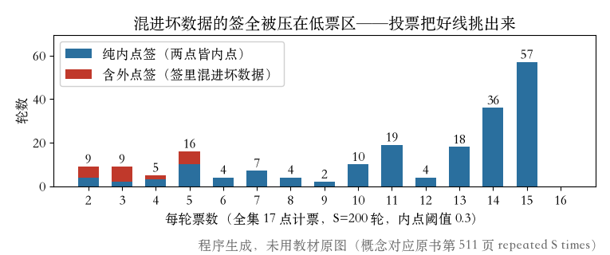
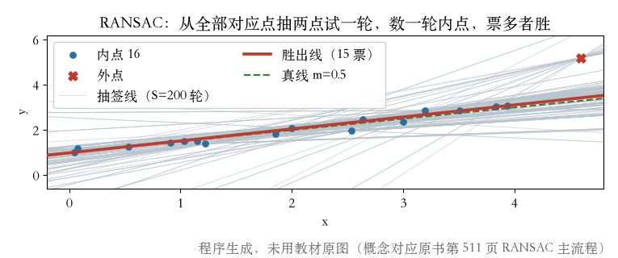
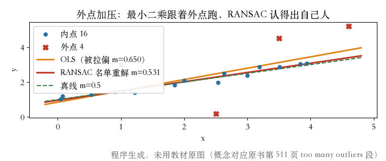

第 8 章 · 鲁棒拟合 · 起点问题
先找对起点，再谈拟合
- 上一集 IRLS：换罚函数、按影响函数加权，一轮轮迭代。
- 外点太多时，从错误起点迭代，可能回不到全局最优。
- RANSAC 不猜谁干净，让所有点投票。
- 这一集：为什么需要它 → 三步流程 → 实验与作业。
依据：原书第 510–511 页
两条路
IRLS：怎么算
RANSAC：从哪儿起步
起点对了，上一集的工具才有用
RANSAC 主流程
抽签、计票、留最多
- 随机抽 k 个点，先算一个初始模型。
- 拿全部点验：残差在门槛内算内点。
- 重复 S 轮，每轮数内点，留内点最多的模型。
- p 是一个点有效的概率；k 个全中概率 p^k。
依据：原书第 511–512 页
加速变体
先粗筛，或按把握抽
- Preemptive RANSAC：先少量打分，挑出最像样的候选再细评。
- PROSAC：按匹配把握从高到低渐进抽样。
- 两个都是提速；正赛仍是抽签、计票、留最多。
- 变体细节不展开，知道适用场景即可。
依据：原书第 511 页
什么时候用
点特别多：Preemptive
匹配有把握排序：PROSAC
规则不变：还是投票
本集实验 · 17 个点
第一轮抽签，拿到 14 票
- 16 个内点 + 1 个外点，抽签池 17 个点。
- 门槛 0.3，约两倍噪声。
- 首轮抽到两个内点，线立住，14 个内点认它。
- 外点也在池子里，摸到它，线就可能偏。
依据：本集实验（seed 2038）
实验设定
17 点 = 16 内点 + 1 外点
门槛 0.3 ≈ 2σ
每签 2 点，抽 200 轮
200 轮投票
票数把好线挑出来
- 最高 15 票，最低 2 票，中位 13 票。
- 180 轮抽到干净签；没有一轮拿到 17 票。
- 20 轮摸到外点，票数全被压到 5 票以下。
- 外点不用被赶出去，票数自然上不去。
依据：本集实验

200 轮票数分布：含外点签被压到低票区｜程序生成，未用教材原图
胜出线与内点名单
15 票的线，15 人的名单
- 胜出线斜率 0.5295，真线 0.5。
- 外点到胜出线残差 1.7729，远在门槛外。
- 15 票的签有 57 张并列，取抽到的第一张。
- 名单重解最小二乘：斜率 0.5384，用上 15 个点。
依据：原书第 511 页 + 本集实验

抽签线、胜出线与真线：15 票的模型最贴内点｜程序生成，未用教材原图
外点加压 · 20 个点
外点加到 4 个，投票仍认自己人
- 外点从 1 个加到 4 个，抽签池 20 个点。
- 普通最小二乘斜率被拉到 0.6496。
- 83/200 轮摸到外点；RANSAC 胜出 16 票，4 个外点 0 票。
- 名单重解 0.5307，与剔除外点后的 OLS 一致。
依据：本集实验

外点加压：OLS 被拉偏，RANSAC 仍找回内点｜程序生成，未用教材原图
另一种判据 · 可复现
RANSAC 数票，LMS 比中位
- LMS 不看票数，看残差平方的中位数，谁小留谁。
- 本集 LMS 斜率 0.5476，RANSAC 0.5295，判据不同。
- 固定种子 2038：数据、抽签、票数、重解逐位一致。
- 换种子就换签，读数只认这一份。
依据：原书第 511 页 + 本集实验
两条读数
RANSAC：15 票，m=0.5295
LMS：m=0.5476
重放：seed 2038 逐位一致
作业
两道作业，各动一个量
- 一：门槛 0.3 换 0.15 和 0.6，重跑投票，看胜出线与票数。
- 二：每签从 2 点改成 3 点，抽 200 轮，数干净签轮数。
- 想想：门槛太窄、太宽，各会出什么问题。
- 书上第 512 页说：样本点越多，要的轮数涨得越快。
依据：原书第 512 页 + 讲者布置
提示
第一道：动门槛
第二道：动签大小
下一集：把这两笔账算清
收束 · 下一集
起点找对了，下一集算门槛和轮数
- RANSAC 负责挑人，最小二乘负责算终点。
- 门槛 0.3 和 200 轮都是本集实验约定，不是原书规定。
- 原书说门槛依应用而定，图像里常见 1–3 像素。
- 下一集：阈值怎么定、轮数怎么算，还有变体族与 MAD。
依据：原书第 511–512 页
下一集
阈值：1–3 像素怎么用
轮数：8.29/8.30 与 Table 8.2
MAD：中位数定尺度